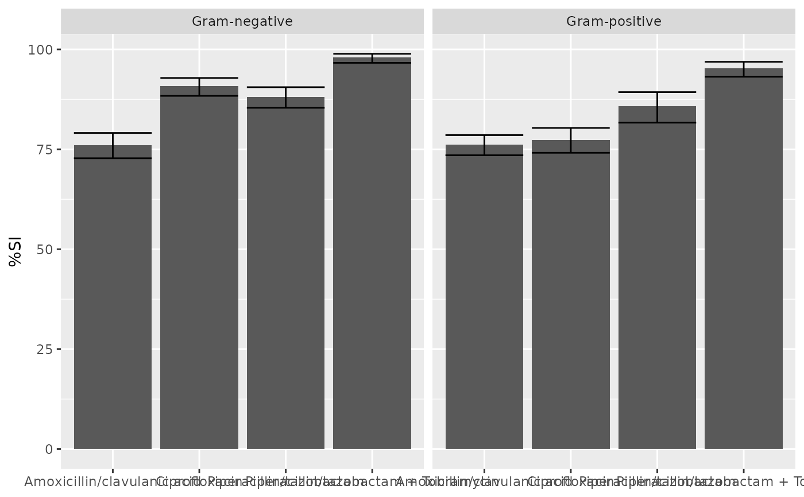
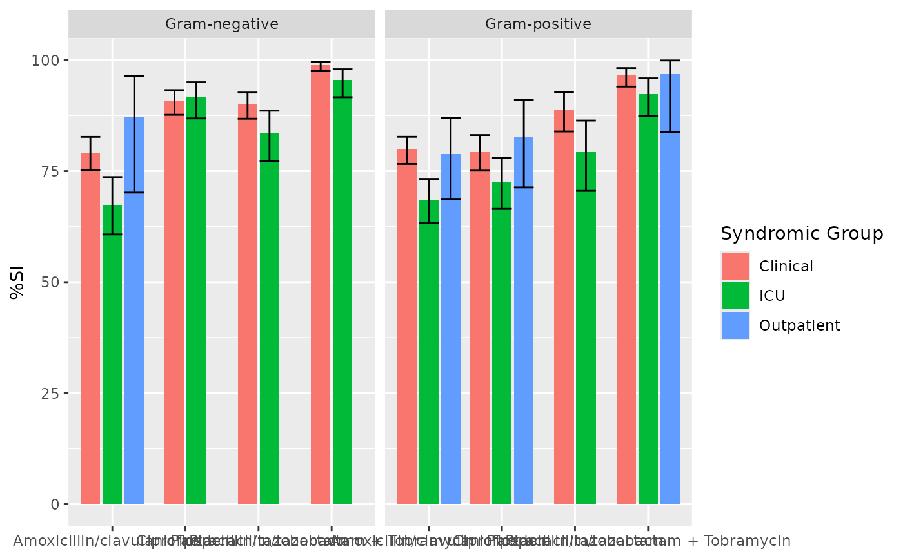

Generate Traditional, Combination, Syndromic, or WISCA Antibiograms
Source:R/antibiogram.R
antibiogram.RdCreate detailed antibiograms with options for traditional, combination, syndromic, and Bayesian WISCA methods.
Adhering to previously described approaches (see Source) and especially the Bayesian WISCA model (Weighted-Incidence Syndromic Combination Antibiogram) by Bielicki et al., these functions provide flexible output formats including plots and tables, ideal for integration with R Markdown and Quarto reports.
Usage
antibiogram(x, antimicrobials = where(is.sir), mo_transform = "shortname",
ab_transform = "name", syndromic_group = NULL, add_total_n = FALSE,
only_all_tested = FALSE, digits = ifelse(wisca, 1, 0),
formatting_type = getOption("AMR_antibiogram_formatting_type",
ifelse(wisca, 14, 18)), col_mo = NULL, language = get_AMR_locale(),
minimum = 30, combine_SI = TRUE, sep = " + ", sort_columns = TRUE,
wisca = FALSE, simulations = 1000, conf_interval = 0.95,
interval_side = "two-tailed", info = interactive(), ...)
wisca(x, antimicrobials = where(is.sir), ab_transform = "name",
syndromic_group = NULL, only_all_tested = FALSE, digits = 1,
formatting_type = getOption("AMR_antibiogram_formatting_type", 14),
col_mo = NULL, language = get_AMR_locale(), combine_SI = TRUE,
sep = " + ", sort_columns = TRUE, simulations = 1000,
conf_interval = 0.95, interval_side = "two-tailed",
info = interactive(), ...)
retrieve_wisca_parameters(wisca_model, ...)
# S3 method for class 'antibiogram'
plot(x, ...)
# S3 method for class 'antibiogram'
autoplot(object, ...)
# S3 method for class 'antibiogram'
knit_print(x, italicise = TRUE,
na = getOption("knitr.kable.NA", default = ""), ...)Source
Bielicki JA et al. (2016). Selecting appropriate empirical antibiotic regimens for paediatric bloodstream infections: application of a Bayesian decision model to local and pooled antimicrobial resistance surveillance data Journal of Antimicrobial Chemotherapy 71(3); doi:10.1093/jac/dkv397
Bielicki JA et al. (2020). Evaluation of the coverage of 3 antibiotic regimens for neonatal sepsis in the hospital setting across Asian countries JAMA Netw Open. 3(2):e1921124; doi:10.1001.jamanetworkopen.2019.21124
Klinker KP et al. (2021). Antimicrobial stewardship and antibiograms: importance of moving beyond traditional antibiograms. Therapeutic Advances in Infectious Disease, May 5;8:20499361211011373; doi:10.1177/20499361211011373
Barbieri E et al. (2021). Development of a Weighted-Incidence Syndromic Combination Antibiogram (WISCA) to guide the choice of the empiric antibiotic treatment for urinary tract infection in paediatric patients: a Bayesian approach Antimicrobial Resistance & Infection Control May 1;10(1):74; doi:10.1186/s13756-021-00939-2
M39 Analysis and Presentation of Cumulative Antimicrobial Susceptibility Test Data, 5th Edition, 2022, Clinical and Laboratory Standards Institute (CLSI). https://clsi.org/standards/products/microbiology/documents/m39/.
Arguments
- x
A data.frame containing at least a column with microorganisms and columns with antimicrobial results (class 'sir', see
as.sir()).- antimicrobials
A vector specifying the antimicrobials containing SIR values to include in the antibiogram (see Examples). Will be evaluated using
guess_ab_col(). This can be:Any antimicrobial name or code that could match (see
guess_ab_col()) to any column inxAny antimicrobial selector, such as
aminoglycosides()orcarbapenems()A combination of the above, using
c(), e.g.:c(aminoglycosides(), "AMP", "AMC")c(aminoglycosides(), carbapenems())
Combination therapy, indicated by using
"+", with or without antimicrobial selectors, e.g.:"cipro + genta""TZP+TOB"c("TZP", "TZP+GEN", "TZP+TOB")carbapenems() + "GEN"carbapenems() + c("", "GEN")carbapenems() + c("", aminoglycosides())
- mo_transform
A character to transform microorganism input - must be
"name","shortname"(default),"gramstain", or one of the column names of the microorganisms data set: "mo", "fullname", "status", "kingdom", "phylum", "class", "order", "family", "genus", "species", "subspecies", "rank", "ref", "oxygen_tolerance", "source", "lpsn", "lpsn_parent", "lpsn_renamed_to", "mycobank", "mycobank_parent", "mycobank_renamed_to", "gbif", "gbif_parent", "gbif_renamed_to", "prevalence", or "snomed". Can also beNULLto not transform the input orNAto consider all microorganisms 'unknown'.- ab_transform
A character to transform antimicrobial input - must be one of the column names of the antimicrobials data set (defaults to
"name"): "ab", "cid", "name", "group", "atc", "atc_group1", "atc_group2", "abbreviations", "synonyms", "oral_ddd", "oral_units", "iv_ddd", "iv_units", or "loinc". Can also beNULLto not transform the input.- syndromic_group
A column name of
x, or values calculated to split rows ofx, e.g. by usingifelse()orcase_when(). See Examples.- add_total_n
(deprecated in favour of
formatting_type) A logical to indicate whethern_testedavailable numbers per pathogen should be added to the table (default isTRUE). This will add the lowest and highest number of available isolates per antimicrobial (e.g, if for E. coli 200 isolates are available for ciprofloxacin and 150 for amoxicillin, the returned number will be "150-200"). This option is unavailable whenwisca = TRUE; in that case, useretrieve_wisca_parameters()to get the parameters used for WISCA.- only_all_tested
(for combination antibiograms): a logical to indicate that isolates must be tested for all antimicrobials, see Details.
- digits
Number of digits to use for rounding the antimicrobial coverage, defaults to 1 for WISCA and 0 otherwise.
- formatting_type
Numeric value (1–22 for WISCA, 1-12 for non-WISCA) indicating how the 'cells' of the antibiogram table should be formatted. See Details > Formatting Type for a list of options.
- col_mo
Column name of the names or codes of the microorganisms (see
as.mo()) - the default is the first column of classmo. Values will be coerced usingas.mo().- language
Language to translate text, which defaults to the system language (see
get_AMR_locale()).- minimum
The minimum allowed number of available (tested) isolates. Any isolate count lower than
minimumwill returnNAwith a warning. The default number of30isolates is advised by the Clinical and Laboratory Standards Institute (CLSI) as best practice, see Source.- combine_SI
A logical to indicate whether all susceptibility should be determined by results of either S, SDD, or I, instead of only S (default is
TRUE).- sep
A separating character for antimicrobial columns in combination antibiograms.
- sort_columns
A logical to indicate whether the antimicrobial columns must be sorted on name.
- wisca
A logical to indicate whether a Weighted-Incidence Syndromic Combination Antibiogram (WISCA) must be generated (default is
FALSE). This will use a Bayesian decision model to estimate regimen coverage probabilities using Monte Carlo simulations. Setsimulations,conf_interval, andinterval_sideto adjust.- simulations
(for WISCA) a numerical value to set the number of Monte Carlo simulations.
- conf_interval
A numerical value to set confidence interval (default is
0.95).- interval_side
The side of the confidence interval, either
"two-tailed"(default),"left"or"right".- info
A logical to indicate info should be printed - the default is
TRUEonly in interactive mode.- ...
When used in R Markdown or Quarto: arguments passed on to
knitr::kable()(otherwise, has no use).- wisca_model
The outcome of
wisca()orantibiogram(..., wisca = TRUE).- object
An
antibiogram()object.- italicise
A logical to indicate whether the microorganism names in the knitr table should be made italic, using
italicise_taxonomy().- na
Character to use for showing
NAvalues.
Details
These functions return a table with values between 0 and 100 for susceptibility, not resistance.
Remember that you should filter your data to let it contain only first isolates! This is needed to exclude duplicates and to reduce selection bias. Use first_isolate() to determine them with one of the four available algorithms: isolate-based, patient-based, episode-based, or phenotype-based.
For estimating antimicrobial coverage, especially when creating a WISCA, the outcome might become more reliable by only including the top n species encountered in the data. You can filter on this top n using top_n_microorganisms(). For example, use top_n_microorganisms(your_data, n = 10) as a pre-processing step to only include the top 10 species in the data.
The numeric values of an antibiogram are stored in a long format as the attribute long_numeric. You can retrieve them using attributes(x)$long_numeric, where x is the outcome of antibiogram() or wisca(). This is ideal for e.g. advanced plotting.
Formatting Type
The formatting of the 'cells' of the table can be set with the argument formatting_type. In these examples, 5 indicates the antimicrobial coverage (4-6 the confidence level), 15 the number of susceptible isolates, and 300 the number of tested (i.e., available) isolates:
5
15
300
15/300
5 (300)
5% (300)
5 (N=300)
5% (N=300)
5 (15/300)
5% (15/300)
5 (N=15/300)
5% (N=15/300)
5 (4-6)
5% (4-6%) - default for WISCA
5 (4-6,300)
5% (4-6%,300)
5 (4-6,N=300)
5% (4-6%,N=300) - default for non-WISCA
5 (4-6,15/300)
5% (4-6%,15/300)
5 (4-6,N=15/300)
5% (4-6%,N=15/300)
The default can be set globally with the package option AMR_antibiogram_formatting_type, e.g. options(AMR_antibiogram_formatting_type = 5). Do note that for WISCA, the total numbers of tested and susceptible isolates are less useful to report, since these are included in the Bayesian model and apparent from the susceptibility and its confidence level.
Set digits (defaults to 0) to alter the rounding of the susceptibility percentages.
Antibiogram Types
There are various antibiogram types, as summarised by Klinker et al. (2021, doi:10.1177/20499361211011373
), and they are all supported by antibiogram().
For clinical coverage estimations, use WISCA whenever possible, since it provides more precise coverage estimates by accounting for pathogen incidence and antimicrobial susceptibility, as has been shown by Bielicki et al. (2020, doi:10.1001.jamanetworkopen.2019.21124 ). See the section Explaining WISCA on this page. Do note that WISCA is pathogen-agnostic, meaning that the outcome is not stratied by pathogen, but rather by syndrome.
Traditional Antibiogram
Case example: Susceptibility of Pseudomonas aeruginosa to piperacillin/tazobactam (TZP)
Code example:
antibiogram(your_data, antimicrobials = "TZP")Combination Antibiogram
Case example: Additional susceptibility of Pseudomonas aeruginosa to TZP + tobramycin versus TZP alone
Code example:
antibiogram(your_data, antimicrobials = c("TZP", "TZP+TOB", "TZP+GEN"))Syndromic Antibiogram
Case example: Susceptibility of Pseudomonas aeruginosa to TZP among respiratory specimens (obtained among ICU patients only)
Code example:
antibiogram(your_data, antimicrobials = penicillins(), syndromic_group = "ward")Weighted-Incidence Syndromic Combination Antibiogram (WISCA)
WISCA can be applied to any antibiogram, see the section Explaining WISCA on this page for more information.
Code example:
antibiogram(your_data, antimicrobials = c("TZP", "TZP+TOB", "TZP+GEN"), wisca = TRUE) # this is equal to: wisca(your_data, antimicrobials = c("TZP", "TZP+TOB", "TZP+GEN"))WISCA uses a sophisticated Bayesian decision model to combine both local and pooled antimicrobial resistance data. This approach not only evaluates local patterns but can also draw on multi-centre datasets to improve regimen accuracy, even in low-incidence infections like paediatric bloodstream infections (BSIs).
Grouped tibbles
For any type of antibiogram, grouped tibbles can also be used to calculate susceptibilities over various groups.
Code example:
Stepped Approach for Clinical Insight
In clinical practice, antimicrobial coverage decisions evolve as more microbiological data becomes available. This theoretical stepped approach ensures empirical coverage can continuously assessed to improve patient outcomes:
Initial Empirical Therapy (Admission / Pre-Culture Data)
At admission, no pathogen information is available.
Action: broad-spectrum coverage is based on local resistance patterns and syndromic antibiograms. Using the pathogen-agnostic yet incidence-weighted WISCA is preferred.
Code example:
antibiogram(your_data, antimicrobials = selected_regimens, mo_transform = NA) # all pathogens set to `NA` # preferred: use WISCA wisca(your_data, antimicrobials = selected_regimens)
Refinement with Gram Stain Results
When a blood culture becomes positive, the Gram stain provides an initial and crucial first stratification (Gram-positive vs. Gram-negative).
Action: narrow coverage based on Gram stain-specific resistance patterns.
Code example:
antibiogram(your_data, antimicrobials = selected_regimens, mo_transform = "gramstain") # all pathogens set to Gram-pos/Gram-neg
Definitive Therapy Based on Species Identification
After cultivation of the pathogen, full pathogen identification allows precise targeting of therapy.
Action: adjust treatment to pathogen-specific antibiograms, minimizing resistance risks.
Code example:
antibiogram(your_data, antimicrobials = selected_regimens, mo_transform = "shortname") # all pathogens set to 'G. species', e.g., E. coli
By structuring antibiograms around this stepped approach, clinicians can make data-driven adjustments at each stage, ensuring optimal empirical and targeted therapy while reducing unnecessary broad-spectrum antimicrobial use.
Inclusion in Combination Antibiograms
Note that for combination antibiograms, it is important to realise that susceptibility can be calculated in two ways, which can be set with the only_all_tested argument (default is FALSE). See this example for two antimicrobials, Drug A and Drug B, about how antibiogram() works to calculate the %SI:
--------------------------------------------------------------------
only_all_tested = FALSE only_all_tested = TRUE
----------------------- -----------------------
Drug A Drug B considered considered considered considered
susceptible tested susceptible tested
-------- -------- ----------- ---------- ----------- ----------
S or I S or I X X X X
R S or I X X X X
<NA> S or I X X - -
S or I R X X X X
R R - X - X
<NA> R - - - -
S or I <NA> X X - -
R <NA> - - - -
<NA> <NA> - - - -
--------------------------------------------------------------------Plotting
All types of antibiograms as listed above can be plotted (using ggplot2::autoplot() or base R's plot() and barplot()). As mentioned above, the numeric values of an antibiogram are stored in a long format as the attribute long_numeric. You can retrieve them using attributes(x)$long_numeric, where x is the outcome of antibiogram() or wisca().
The outcome of antibiogram() can also be used directly in R Markdown / Quarto (i.e., knitr) for reports. In this case, knitr::kable() will be applied automatically and microorganism names will even be printed in italics at default (see argument italicise).
You can also use functions from specific 'table reporting' packages to transform the output of antibiogram() to your needs, e.g. with flextable::as_flextable() or gt::gt().
Explaining WISCA
WISCA (Weighted-Incidence Syndromic Combination Antibiogram) estimates the probability of empirical coverage for combination regimens.
It weights susceptibility by pathogen prevalence within a clinical syndrome and provides credible intervals around the expected coverage.
For more background, interpretation, and examples, see the WISCA vignette.
Examples
# example_isolates is a data set available in the AMR package.
# run ?example_isolates for more info.
example_isolates
#> # A tibble: 2,000 × 46
#> date patient age gender ward mo PEN OXA FLC AMX
#> <date> <chr> <dbl> <chr> <chr> <mo> <sir> <sir> <sir> <sir>
#> 1 2002-01-02 A77334 65 F Clinical B_ESCHR_COLI R NA NA NA
#> 2 2002-01-03 A77334 65 F Clinical B_ESCHR_COLI R NA NA NA
#> 3 2002-01-07 067927 45 F ICU B_STPHY_EPDR R NA R NA
#> 4 2002-01-07 067927 45 F ICU B_STPHY_EPDR R NA R NA
#> 5 2002-01-13 067927 45 F ICU B_STPHY_EPDR R NA R NA
#> 6 2002-01-13 067927 45 F ICU B_STPHY_EPDR R NA R NA
#> 7 2002-01-14 462729 78 M Clinical B_STPHY_AURS R NA S R
#> 8 2002-01-14 462729 78 M Clinical B_STPHY_AURS R NA S R
#> 9 2002-01-16 067927 45 F ICU B_STPHY_EPDR R NA R NA
#> 10 2002-01-17 858515 79 F ICU B_STPHY_EPDR R NA S NA
#> # ℹ 1,990 more rows
#> # ℹ 36 more variables: AMC <sir>, AMP <sir>, TZP <sir>, CZO <sir>, FEP <sir>,
#> # CXM <sir>, FOX <sir>, CTX <sir>, CAZ <sir>, CRO <sir>, GEN <sir>,
#> # TOB <sir>, AMK <sir>, KAN <sir>, TMP <sir>, SXT <sir>, NIT <sir>,
#> # FOS <sir>, LNZ <sir>, CIP <sir>, MFX <sir>, VAN <sir>, TEC <sir>,
#> # TCY <sir>, TGC <sir>, DOX <sir>, ERY <sir>, CLI <sir>, AZM <sir>,
#> # IPM <sir>, MEM <sir>, MTR <sir>, CHL <sir>, COL <sir>, MUP <sir>, …
# \donttest{
# Traditional antibiogram ----------------------------------------------
antibiogram(example_isolates,
antimicrobials = c(aminoglycosides(), carbapenems())
)
#> ℹ For aminoglycosides() using columns 'GEN' (gentamicin), 'TOB'
#> (tobramycin), 'AMK' (amikacin), and 'KAN' (kanamycin)
#> ℹ For carbapenems() using columns 'IPM' (imipenem) and 'MEM' (meropenem)
#> # An Antibiogram (non-WISCA / 95% CI): 10 × 7
#> Pathogen Amikacin Gentamicin Imipenem Kanamycin Meropenem Tobramycin
#> <chr> <chr> <chr> <chr> <chr> <chr> <chr>
#> 1 CoNS 0% (0-8%,N… 86% (82-9… 52% (37… 0% (0-8%… 52% (37-… 22% (12-3…
#> 2 E. coli 100% (98-1… 98% (96-9… 100% (9… NA 100% (99… 97% (96-9…
#> 3 E. faecalis 0% (0-9%,N… 0% (0-9%,… 100% (9… 0% (0-9%… NA 0% (0-9%,…
#> 4 K. pneumoniae NA 90% (79-9… 100% (9… NA 100% (93… 90% (79-9…
#> 5 P. aeruginosa NA 100% (88-… NA 0% (0-12… NA 100% (88-…
#> 6 P. mirabilis NA 94% (80-9… 94% (79… NA NA 94% (80-9…
#> 7 S. aureus NA 99% (97-1… NA NA NA 98% (92-1…
#> 8 S. epidermidis 0% (0-8%,N… 79% (71-8… NA 0% (0-8%… NA 51% (40-6…
#> 9 S. hominis NA 92% (84-9… NA NA NA 85% (74-9…
#> 10 S. pneumoniae 0% (0-3%,N… 0% (0-3%,… NA 0% (0-3%… NA 0% (0-3%,…
#> # Use `ggplot2::autoplot()` or base R `plot()` to create a plot of this antibiogram,
#> # or use it directly in R Markdown or https://quarto.org, see ?antibiogram
antibiogram(example_isolates,
antimicrobials = aminoglycosides(),
ab_transform = "atc",
mo_transform = "gramstain"
)
#> ℹ For aminoglycosides() using columns 'GEN' (gentamicin), 'TOB'
#> (tobramycin), 'AMK' (amikacin), and 'KAN' (kanamycin)
#> # An Antibiogram (non-WISCA / 95% CI): 2 × 5
#> Pathogen J01GB01 J01GB03 J01GB04 J01GB06
#> <chr> <chr> <chr> <chr> <chr>
#> 1 Gram-negative 96% (94-97%,N=686) 96% (95-98%,N=684) 0% (0-10%,N=35) 98% (96-…
#> 2 Gram-positive 34% (31-38%,N=665) 63% (60-66%,N=1170) 0% (0-1%,N=436) 0% (0-1%…
#> # Use `ggplot2::autoplot()` or base R `plot()` to create a plot of this antibiogram,
#> # or use it directly in R Markdown or https://quarto.org, see ?antibiogram
antibiogram(example_isolates,
antimicrobials = carbapenems(),
ab_transform = "name",
mo_transform = "name"
)
#> ℹ For carbapenems() using columns 'IPM' (imipenem) and 'MEM' (meropenem)
#> # An Antibiogram (non-WISCA / 95% CI): 5 × 3
#> Pathogen Imipenem Meropenem
#> <chr> <chr> <chr>
#> 1 Coagulase-negative Staphylococcus (CoNS) 52% (37-67%,N=48) 52% (37-67%,N=4…
#> 2 Enterococcus faecalis 100% (91-100%,N=38) NA
#> 3 Escherichia coli 100% (99-100%,N=422) 100% (99-100%,N…
#> 4 Klebsiella pneumoniae 100% (93-100%,N=51) 100% (93-100%,N…
#> 5 Proteus mirabilis 94% (79-99%,N=32) NA
#> # Use `ggplot2::autoplot()` or base R `plot()` to create a plot of this antibiogram,
#> # or use it directly in R Markdown or https://quarto.org, see ?antibiogram
# Combined antibiogram -------------------------------------------------
# combined antimicrobials yield higher empiric coverage
antibiogram(example_isolates,
antimicrobials = c("TZP", "TZP+TOB", "TZP+GEN"),
mo_transform = "gramstain"
)
#> # An Antibiogram (non-WISCA / 95% CI): 2 × 4
#> Pathogen Piperacillin/tazobac…¹ Piperacillin/tazobac…² Piperacillin/tazobac…³
#> <chr> <chr> <chr> <chr>
#> 1 Gram-neg… 88% (85-91%,N=641) 99% (97-99%,N=691) 98% (97-99%,N=693)
#> 2 Gram-pos… 86% (82-89%,N=345) 98% (96-98%,N=1044) 95% (93-97%,N=550)
#> # ℹ abbreviated names: ¹`Piperacillin/tazobactam`,
#> # ²`Piperacillin/tazobactam + Gentamicin`,
#> # ³`Piperacillin/tazobactam + Tobramycin`
#> # Use `ggplot2::autoplot()` or base R `plot()` to create a plot of this antibiogram,
#> # or use it directly in R Markdown or https://quarto.org, see ?antibiogram
# you can use any antimicrobial selector with `+` too:
antibiogram(example_isolates,
antimicrobials = ureidopenicillins() + c("", "GEN", "tobra"),
mo_transform = "gramstain"
)
#> ℹ For ureidopenicillins() using column 'TZP' (piperacillin/tazobactam)
#> # An Antibiogram (non-WISCA / 95% CI): 2 × 4
#> Pathogen Piperacillin/tazobac…¹ Piperacillin/tazobac…² Piperacillin/tazobac…³
#> <chr> <chr> <chr> <chr>
#> 1 Gram-neg… 88% (85-91%,N=641) 99% (97-99%,N=691) 98% (97-99%,N=693)
#> 2 Gram-pos… 86% (82-89%,N=345) 98% (96-98%,N=1044) 95% (93-97%,N=550)
#> # ℹ abbreviated names: ¹`Piperacillin/tazobactam`,
#> # ²`Piperacillin/tazobactam + Gentamicin`,
#> # ³`Piperacillin/tazobactam + Tobramycin`
#> # Use `ggplot2::autoplot()` or base R `plot()` to create a plot of this antibiogram,
#> # or use it directly in R Markdown or https://quarto.org, see ?antibiogram
# names of antimicrobials do not need to resemble columns exactly:
antibiogram(example_isolates,
antimicrobials = c("Cipro", "cipro + genta"),
mo_transform = "gramstain",
ab_transform = "name",
sep = " & "
)
#> # An Antibiogram (non-WISCA / 95% CI): 2 × 3
#> Pathogen Ciprofloxacin `Ciprofloxacin & Gentamicin`
#> <chr> <chr> <chr>
#> 1 Gram-negative 91% (88-93%,N=684) 99% (97-99%,N=694)
#> 2 Gram-positive 77% (74-80%,N=724) 93% (91-94%,N=847)
#> # Use `ggplot2::autoplot()` or base R `plot()` to create a plot of this antibiogram,
#> # or use it directly in R Markdown or https://quarto.org, see ?antibiogram
# Syndromic antibiogram ------------------------------------------------
# the data set could contain a filter for e.g. respiratory specimens
antibiogram(example_isolates,
antimicrobials = c(aminoglycosides(), carbapenems()),
syndromic_group = "ward"
)
#> ℹ For aminoglycosides() using columns 'GEN' (gentamicin), 'TOB'
#> (tobramycin), 'AMK' (amikacin), and 'KAN' (kanamycin)
#> ℹ For carbapenems() using columns 'IPM' (imipenem) and 'MEM' (meropenem)
#> # An Antibiogram (non-WISCA / 95% CI): 14 × 8
#> `Syndromic Group` Pathogen Amikacin Gentamicin Imipenem Kanamycin Meropenem
#> <chr> <chr> <chr> <chr> <chr> <chr> <chr>
#> 1 Clinical CoNS NA 89% (84-9… 57% (39… NA 57% (39-…
#> 2 ICU CoNS NA 79% (68-8… NA NA NA
#> 3 Outpatient CoNS NA 84% (66-9… NA NA NA
#> 4 Clinical E. coli 100% (9… 98% (96-9… 100% (9… NA 100% (99…
#> 5 ICU E. coli 100% (9… 99% (95-1… 100% (9… NA 100% (97…
#> 6 Clinical K. pneumo… NA 92% (81-9… 100% (9… NA 100% (92…
#> 7 Clinical P. mirabi… NA 100% (88-… NA NA NA
#> 8 Clinical S. aureus NA 99% (95-1… NA NA NA
#> 9 ICU S. aureus NA 100% (95-… NA NA NA
#> 10 Clinical S. epider… NA 82% (72-9… NA NA NA
#> 11 ICU S. epider… NA 72% (60-8… NA NA NA
#> 12 Clinical S. hominis NA 96% (85-9… NA NA NA
#> 13 Clinical S. pneumo… 0% (0-5… 0% (0-5%,… NA 0% (0-5%… NA
#> 14 ICU S. pneumo… 0% (0-1… 0% (0-12%… NA 0% (0-12… NA
#> # ℹ 1 more variable: Tobramycin <chr>
#> # Use `ggplot2::autoplot()` or base R `plot()` to create a plot of this antibiogram,
#> # or use it directly in R Markdown or https://quarto.org, see ?antibiogram
# now define a data set with only E. coli
ex1 <- example_isolates[which(mo_genus() == "Escherichia"), ]
#> ℹ Using column 'mo' as input for mo_genus()
# with a custom language, though this will be determined automatically
# (i.e., this table will be in Spanish on Spanish systems)
antibiogram(ex1,
antimicrobials = aminoglycosides(),
ab_transform = "name",
syndromic_group = ifelse(ex1$ward == "ICU",
"UCI", "No UCI"
),
language = "es"
)
#> ℹ For aminoglycosides() using columns 'GEN' (gentamicin), 'TOB'
#> (tobramycin), 'AMK' (amikacin), and 'KAN' (kanamycin)
#> # An Antibiogram (non-WISCA / 95% CI): 2 × 5
#> `Grupo sindrómico` Patógeno Amikacina Gentamicina Tobramicina
#> <chr> <chr> <chr> <chr> <chr>
#> 1 No UCI E. coli 100% (97-100%,N=119) 98% (96-99%,N=32… 98% (96-99…
#> 2 UCI E. coli 100% (93-100%,N=52) 99% (95-100%,N=1… 96% (92-99…
#> # Use `ggplot2::autoplot()` or base R `plot()` to create a plot of this antibiogram,
#> # or use it directly in R Markdown or https://quarto.org, see ?antibiogram
# WISCA antibiogram ----------------------------------------------------
# WISCA are not stratified by species, but rather on syndromes
antibiogram(example_isolates,
antimicrobials = c("TZP", "TZP+TOB", "TZP+GEN"),
syndromic_group = "ward",
wisca = TRUE
)
#> # An Antibiogram (WISCA / 95% CI): 3 × 4
#> `Syndromic Group` `Piperacillin/tazobactam` Piperacillin/tazobactam + Gentam…¹
#> <chr> <chr> <chr>
#> 1 Clinical 73.4% (68.3-78.6%) 92.3% (90.7-93.7%)
#> 2 ICU 57.4% (49.7-65.4%) 84.9% (82.1-87.6%)
#> 3 Outpatient 57% (47.4-66.7%) 74.6% (68.8-79.8%)
#> # ℹ abbreviated name: ¹`Piperacillin/tazobactam + Gentamicin`
#> # ℹ 1 more variable: `Piperacillin/tazobactam + Tobramycin` <chr>
#> # Use `ggplot2::autoplot()` or base R `plot()` to create a plot of this antibiogram,
#> # or use it directly in R Markdown or https://quarto.org, see ?antibiogram
# Print the output for R Markdown / Quarto -----------------------------
ureido <- antibiogram(example_isolates,
antimicrobials = ureidopenicillins(),
syndromic_group = "ward",
wisca = TRUE
)
#> ℹ For ureidopenicillins() using column 'TZP' (piperacillin/tazobactam)
# in an Rmd file, you would just need to return `ureido` in a chunk,
# but to be explicit here:
if (requireNamespace("knitr")) {
cat(knitr::knit_print(ureido))
}
#>
#>
#> |Syndromic Group |Piperacillin/tazobactam |
#> |:---------------|:-----------------------|
#> |Clinical |73.5% (67.8-79%) |
#> |ICU |57.7% (49.9-65.3%) |
#> |Outpatient |56.9% (46.5-66.8%) |
# Generate plots with ggplot2 or base R --------------------------------
ab1 <- antibiogram(example_isolates,
antimicrobials = c("AMC", "CIP", "TZP", "TZP+TOB"),
mo_transform = "gramstain"
)
ab2 <- antibiogram(example_isolates,
antimicrobials = c("AMC", "CIP", "TZP", "TZP+TOB"),
mo_transform = "gramstain",
syndromic_group = "ward"
)
if (requireNamespace("ggplot2")) {
ggplot2::autoplot(ab1)
}

if (requireNamespace("ggplot2")) {
ggplot2::autoplot(ab2)
}

plot(ab1)
plot(ab2)
 # }
# }